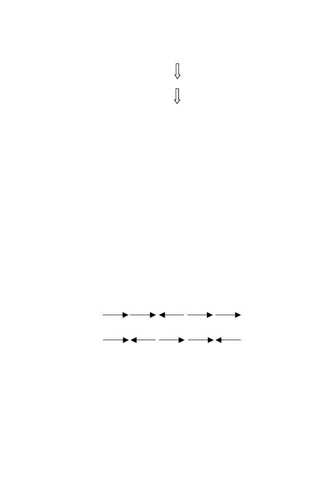

132
5 Genome Rearrangements
F:
1[2 4]5 3
1 4[2 5 3]
H:
1 4 3 5 2
5.3 Analyzing Genomes with Reversals of Oriented
Conserved Segments
In the previous section, we showed how to analyze permutations. When we
start to analyze genomes, the elements are now genes (or sets of genes in
an interval that contains no breakpoints), and these have
orientation
. Gene
orientation might be indicated by transcription direction, which might be
denoted as “+” if it is transcribed left to right in a particular map as drawn
and “
−
” if it is transcribed right to left. Genes
α
,
β
, and
γ
might appear
in one genome in an order +
α
+
β
+
γ
but in another genome in the reverse
order
−
γ
−
β
−
α
. These might represent conserved segment
g
i
, which would be
represented as +
g
i
= +
α
+
β
+
γ
in the former case and as
−
g
i
=
−
γ
−
β
−
α
in the latter case.
For example, consider the two genomes
J
and
K
below:
J
: +
g
1
+
g
5
−
g
2
+
g
3
+
g
4
K
:
+
g
1
−
g
3
+
g
2
+
g
4
−
g
5
.
These could be represented graphically as (again, employing only the subscript
labels):
J
:
1 5
2 3 4
K
: 1 3
2 4 5
As before, we are seeking the reversal distance
d
(
J, K
), which is the minimum
number of reversals needed to convert
J
to
K
. But now when we do reversals
to sort the segment orders, we must also keep track of the orientations of the
conserved segments to make sure that both gene order
and
orientation are
correct. Just as we did before, we calculate
d
(
J, K
) by constructing an edge-
colored graph and then counting the maximum number of alternating cycles
into which the graph can be decomposed. But we must modify the procedure
to keep track of the orientations of the conserved segments. (As noted above,
the genome rearrangement problem with unsigned segments is NP-complete.
Although signed segments would appear to make the problem more difficult,
actually there is an
O
(
n
2
) algorithm! Further discussion of this is beyond the
scope of this chapter.)